Simulation Tools
Ristretto provides comprehensive tools for simulating MRI acquisitions. These are essential for testing reconstruction algorithms, teaching MRI concepts, and prototyping new acquisition strategies.
Why Simulate?
Simulation is useful for:
- Testing reconstruction algorithms without needing real MRI data
- Understanding MRI physics through hands-on experimentation
- Prototyping new acquisition strategies before scanner implementation
- Teaching and learning MRI concepts interactively
- Benchmarking reconstruction methods with known ground truth
Overview: Complete Simulation Pipeline
A typical simulation workflow:
using Ristretto
# 1. Create a phantom (ground truth image), area-sampled on a grid about 1.6× finer than the
# 256 × 256 reconstruction (see "Avoiding the inverse crime" below)
img = create_shepp_logan_phantom(404, 404, :axial; ti = MRISheppLoganIntensities(), eltype = ComplexF32, supersample = 4)
# 2. Generate coil sensitivity maps on the phantom's grid
smaps = coil_sensitivities(404, 404, 8)
# 3. Create a subsampling pattern on the reconstruction grid
pdf = VariableDensitySampling(PolynomialDistribution(3), 3.0, 0.1)
pattern = create_sampling_pattern(pdf, (256, 256))
# 4. Simulate the acquisition
acq = AcquisitionInfo(is3D=false,
image_size=(256, 256),
sensitivity_maps=smaps,
subsampling=pattern)
acq_with_data = simulate_acquisition(img, acq; keep_sensitivity_maps = true)
# 5. Reconstruct and compare
img_recon = reconstruct(acq_with_data, IterativeReconstruction(L1Wavelet2D(5e-3)); verbosity = Silent())The returned acquisition carries the maps resampled to the reconstruction grid only because keep_sensitivity_maps = true asks for them; with real data they would be estimated (estimate_sensitivities), and so would they in a simulation that should not reuse the model it was generated with.
Phantoms
Phantoms are synthetic images that serve as ground truth for testing.
Shepp-Logan Phantom
The classic test phantom for MRI reconstruction. Ristretto uses phantoms from the GeometricMedicalPhantoms.jl package.
using MIRTjim: jim
# 2D Shepp-Logan
img = create_shepp_logan_phantom(256, 256, :axial; ti = MRISheppLoganIntensities(), eltype = ComplexF32)
# 3D Shepp-Logan
img_3d = create_shepp_logan_phantom(128, 128, 64; ti = MRISheppLoganIntensities(), eltype = ComplexF32)
jim(img_3d; title="Shepp-Logan Phantom", nrow=4, size=(1200,300))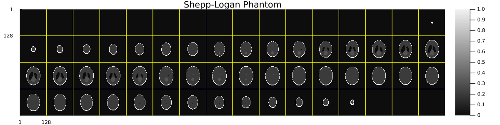
Coil Sensitivity Maps
Sensitivity maps model the spatial response of receiver coils in parallel imaging.
Ristretto.coil_sensitivities — Function
coil_sensitivities(nx::Int, ny::Int, nc::Int) -> Array{ComplexF32, 3}
coil_sensitivities(nx::Int, ny::Int, nz::Int, nc::Int) -> Array{ComplexF32, 4}Generate simulated sensitivity maps for multi-coil MRI receivers.
Physics Background
In parallel MRI, multiple receiver coils are arranged around the imaging subject, each with spatially varying sensitivity profiles. This function simulates realistic coil sensitivity maps based on the physical principles of electromagnetic reception.
Physical Model
The sensitivity maps are constructed using:
Spatial Arrangement: Coils are positioned in a circular array around the field of view, with centers at angles
2π(i-1)/ncfor coili, mimicking typical clinical coil arrays.Magnitude Profile: Each coil's sensitivity decreases with distance from its center following a Gaussian profile
exp(-r²/(2σ²)), whereris the distance from the coil center. This reflects the physical reality that receiver coils are most sensitive to signal sources near them, with sensitivity falling off smoothly with distance.Phase Variation: A linear phase ramp
exp(im(0.5x + 0.3y))is applied to simulate phase variations due to:- B₀ field inhomogeneities
- Receiver electronics phase offsets
- Geometric positioning effects
Scaling: The maps are normalized using the root-sum-of-squares across all coils, ensuring that
√(Σᵢ|sᵢ(x,y)|²) ≈ 1at each spatial location. This preserves signal intensity while maintaining spatial encoding information.
Arguments
nx::Int: Number of pixels in x-directionny::Int: Number of pixels in y-directionnz::Int: Number of pixels in z-direction (for 3D sensitivities)nc::Int: Number of coils
Returns
Array{ComplexF32, 3}: Sensitivity maps of size (nx, ny, nc), where each slice along dimension 3 represents one coil's complex-valued sensitivity profile.
# Generate sensitivity maps for 8 coils
smaps = coil_sensitivities(256, 256, 8)
# 3D sensitivity maps
smaps_3d = coil_sensitivities(128, 128, 64, 8)
# Visualize 2D coil sensitivities
jim(smaps; title="Coil Sensitivity Maps", nrow=1, size=(1400, 200))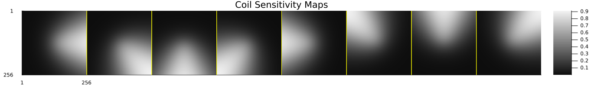
What you get:
- Smooth, realistic sensitivity patterns
- Each coil has higher sensitivity near its location
- Proper phase variations
- Returns ComplexF32 array with shape (nx, ny, [nz,] ncoils)
Subsampling Patterns
Subsampling patterns determine which k-space locations are measured. Each strategy below is a Subsampling object; create_sampling_pattern draws one realisation of it.
Ristretto.create_sampling_pattern — Function
create_sampling_pattern(subsampling::Subsampling, dims; subsample_freq_encoding=false, number_of_trials=5)Create a k-space sampling pattern for the given subsampling strategy and k-space size dims (a 2- or 3-tuple). Unless number_of_trials == 1, several candidate patterns are generated and the one with the lowest sidelobe-to-peak ratio of the point spread function is kept.
By default the frequency-encoding (first) dimension is fully sampled: the pattern is generated over dims[2:end] and returned as (:, mask), ready to be used as the subsampling argument of AcquisitionInfo. With subsample_freq_encoding = true all dimensions are subsampled and a Bool mask of size dims is returned instead.
See also to_displayable_mask to convert either return form into a full-size mask.
Ristretto.to_displayable_mask — Function
to_displayable_mask(pattern, dims)Convert a sampling pattern into a Bool mask of size dims suitable for display. Accepts every form a CartesianAcquisitionInfo's subsampling takes: a plain Bool mask (returned as is), the (:, mask) form create_sampling_pattern returns when the frequency-encoding dimension is fully sampled (a 2D acquisition, so dims must be two-dimensional for it), and a per-axis tuple with one selector per dimension of dims — :, a Bool vector, or an index vector or range, e.g. (:, [1, 3, 5]).
Uniform Cartesian Sampling
Ristretto.UniformRandomSampling — Type
UniformRandomSampling(acceleration::Float64; center_fraction::Float64=0.1)Create a uniform random sampling pattern with the specified acceleration factor and center fraction. The acceleration parameter controls the overall undersampling factor, while the center_fraction parameter specifies the fraction of low-frequency k-space positions to be fully sampled.
Example: 2D Uniform Random Sampling
using Plots
# Center fraction = 0.1 (10% fully sampled center, default)
pdf = UniformRandomSampling(3.0)
pattern = create_sampling_pattern(pdf, (256, 256))
p1 = jim(to_displayable_mask(pattern, (256, 256)); title = "cf=0.1")
# Center fraction = 0.3 (30% fully sampled center)
pdf = UniformRandomSampling(3.0, 0.3)
pattern = create_sampling_pattern(pdf, (256, 256))
p2 = jim(to_displayable_mask(pattern, (256, 256)); title = "cf=0.3")
# 2D subsampling: freq encoding also subsampled (not realistic, for demo)
pdf = UniformRandomSampling(3.0)
pattern = create_sampling_pattern(pdf, (256, 256), subsample_freq_encoding=true)
p3 = jim(to_displayable_mask(pattern, (256, 256)); title = "Freq encoding subsampled")
jim(p1, p2, p3; layout = (1, 3), size = (1000, 300))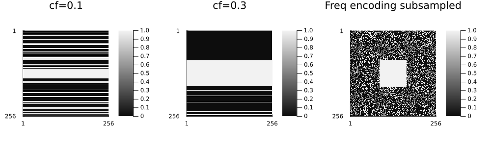
Example: 3D Uniform Random Sampling
pdf = UniformRandomSampling(4.0, 0.1)
pattern_3d = create_sampling_pattern(pdf, (128, 128, 64))
mask = zeros(Bool, 128, 128, 64)
mask[pattern_3d...] .= true
p1 = jim(mask[:, :, 32]; title="x-y plane")
p2 = jim(mask[:, 64, :]; title="x-z plane")
p3 = jim(mask[64, :, :]; title="y-z plane")
jim(p1, p2, p3; layout=(1,3), size=(1000,300))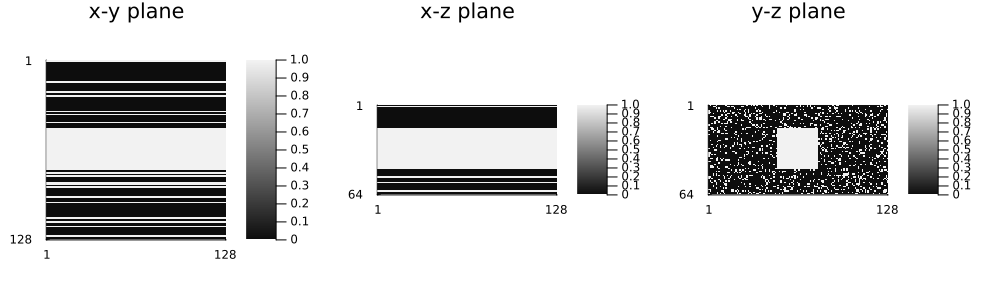
Variable Density Sampling
The most common pattern for compressed sensing. There are many options for generating variable density patterns.
Ristretto.GaussianDistribution — Type
GaussianDistribution(std::Float64=1/3)Create a Gaussian variable density distribution with the specified standard deviation std. The sampling probability follows a Gaussian profile centered at k-space center: W(r) = exp(-0.5 * (r / std)^2), where r is the normalized distance from the k-space center.
Ristretto.PolynomialDistribution — Type
PolynomialDistribution(p::Float64=4)Create a Polynomial variable density distribution with the specified exponent p. The sampling probability is proportional to power of the distance from the k-space center: W(r) = (1 - r)^p, where r is the normalized distance from the k-space center.
Ristretto.VariableDensitySampling — Type
VariableDensitySampling(distribution::VariableDensityDistribution, acceleration::Float64; center_fraction::Float64=0.1)Create a variable density random sampling pattern based on the specified distribution, acceleration factor, and center fraction. The distribution parameter can be either GaussianDistribution or PolynomialDistribution. The acceleration parameter controls the overall undersampling factor, while the center_fraction parameter specifies the fraction of low-frequency k-space positions to be fully sampled.
Example: Different Variable Density Patterns in 2D
gaussian_pdf₁ = VariableDensitySampling(GaussianDistribution(1/3), 3.0)
gaussian_pattern₁ = create_sampling_pattern(gaussian_pdf₁, (256, 256))
W = Ristretto.construct_weights(gaussian_pdf₁, (256,))
p1 = plot(W; legend = false)
p2 = jim(to_displayable_mask(gaussian_pattern₁, (256, 256)))
jim(p1, p2; layout=(1,2), plot_title="Gaussian std=1/3", size = (700, 300))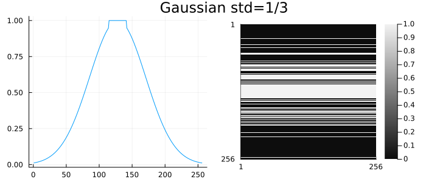
gaussian_pdf₂ = VariableDensitySampling(GaussianDistribution(1/5), 3.0)
gaussian_pattern₂ = create_sampling_pattern(gaussian_pdf₂, (256, 256))
W = Ristretto.construct_weights(gaussian_pdf₂, (256,))
p1 = plot(W; legend = false)
p2 = jim(to_displayable_mask(gaussian_pattern₂, (256, 256)))
jim(p1, p2; layout=(1,2), plot_title="Gaussian std=1/5", size = (700, 300))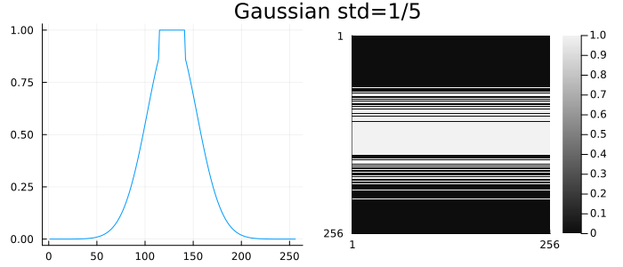
poly_pdf₁ = VariableDensitySampling(PolynomialDistribution(2), 3.0)
poly_pattern₁ = create_sampling_pattern(poly_pdf₁, (256, 256))
W = Ristretto.construct_weights(poly_pdf₁, (256,))
p1 = plot(W; legend = false)
p2 = jim(to_displayable_mask(poly_pattern₁, (256, 256)))
jim(p1, p2; layout=(1,2), plot_title="Polynomial p=2", size = (700, 300))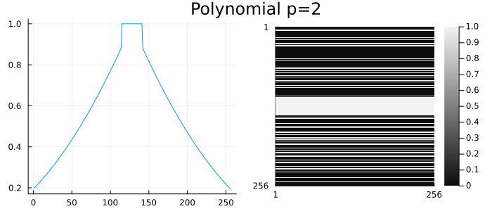
poly_pdf₂ = VariableDensitySampling(PolynomialDistribution(4), 3.0)
poly_pattern₂ = create_sampling_pattern(poly_pdf₂, (256, 256))
W = Ristretto.construct_weights(poly_pdf₂, (256,))
p1 = plot(W; legend = false)
p2 = jim(to_displayable_mask(poly_pattern₂, (256, 256)))
jim(p1, p2; layout=(1,2), plot_title="Polynomial p=4", size = (700, 300))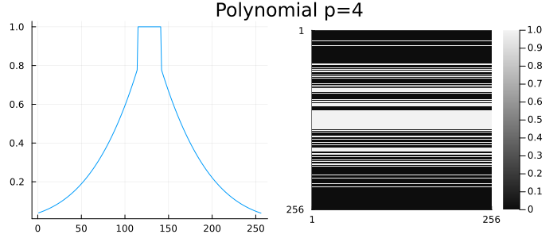
Example: Variable Density in 3D
poly_pdf = VariableDensitySampling(PolynomialDistribution(2), 3.0)
poly_pattern = create_sampling_pattern(poly_pdf, (256, 256, 256))
mask = zeros(Bool, 256, 256, 256)
mask[poly_pattern...] .= true
p1 = jim(mask[:, :, 128]; title="x-y plane")
p2 = jim(mask[:, 128, :]; title="x-z plane")
p3 = jim(mask[128, :, :]; title="y-z plane")
jim(p1, p2, p3; layout=(1,3), size=(900,200))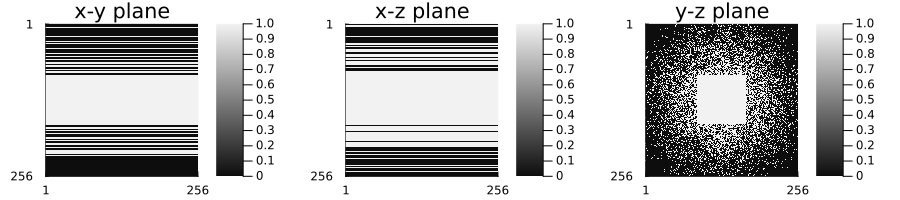
Poisson Disk Sampling
Spatially uniform but avoiding clustering.
Ristretto.PoissonDiskSampling — Type
PoissonDiskSampling(acceleration::Float64, center_fraction::Float64=0.1)Create a Poisson disk sampling pattern with the specified acceleration factor and center fraction. The acceleration parameter controls the overall undersampling factor, while the center_fraction parameter specifies the fraction of low-frequency k-space positions to be fully sampled.
pdf = PoissonDiskSampling(3.0)
pattern = create_sampling_pattern(pdf, (256, 256), subsample_freq_encoding=true)
jim(to_displayable_mask(pattern, (256, 256)); title="Poisson Disk Sampling", size = (300, 300))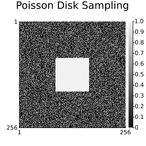
Properties:
- Maintains minimum distance between samples
- More uniform coverage than random
- Good incoherence properties
Regular Lattice Sampling
The product parallel-imaging pattern: every R-th phase encode, optionally with a fully sampled autocalibration (ACS) band. Unlike the random generators it is deterministic, and it is the pattern GRAPPA requires — its kernel is defined by a fixed geometric relation between a hole and its neighbours, which only a regular lattice has.
Ristretto.RegularLatticeSampling — Type
RegularLatticeSampling(acceleration::Real; center_fraction=0.0)Regular (equispaced) undersampling: every acceleration-th phase encode is acquired, optionally with a fully sampled autocalibration (ACS) band in the centre. This is the pattern GRAPPA and every product parallel-imaging sequence use, and unlike the random generators it is deterministic, so a single realisation is the pattern.
accelerationmust be a whole number. Over two subsampled dimensions (a 3D acquisition) it is factored into a stride per dimension, as close to equal as its divisors allow —4becomes 2×2,3becomes 3×1.center_fractionis the fraction of k-space positions held in the fully sampled ACS band, the same meaning it has for the random generators. The default of0is a pure regular lattice; GRAPPA and SPIRiT need a non-zero value to calibrate on.
The net acceleration is acceleration only when center_fraction is at its default: the ACS band adds samples on top of the lattice.
Partial Fourier is a separate scheme, not a modifier of this one — see PartialFourierSampling.
See also create_sampling_pattern.
Partial Fourier Sampling
A contiguous band from one end of k-space, everything past it left unacquired. It exploits the Hermitian symmetry of k-space instead of coil encoding, so it is its own scheme rather than a modifier of the lattice; reconstruct it with Homodyne or POCS.
Ristretto.PartialFourierSampling — Type
PartialFourierSampling(fraction::Real)Partial-Fourier truncation: every phase encode of the first fraction of the last subsampled dimension is acquired, and nothing past it. It exploits the Hermitian symmetry of k-space rather than parallel imaging, so it is a scheme of its own and not a modifier of RegularLatticeSampling — combining a lattice with a truncated band would leave a pattern neither a homodyne/POCS reconstruction nor a GRAPPA kernel handles as intended.
fraction must be in (0, 1] and, for the acquired band to cover the k-space centre at all, above 0.5. The net acceleration is 1 / fraction.
See also create_sampling_pattern, Homodyne, POCS.
# R = 3 with a 10% ACS band: the GRAPPA/SPIRiT calibration pattern
grappa_pdf = RegularLatticeSampling(3; center_fraction = 0.1)
grappa_pattern = create_sampling_pattern(grappa_pdf, (256, 256))
# 6/8 partial Fourier
pf_pdf = PartialFourierSampling(0.75)
pf_pattern = create_sampling_pattern(pf_pdf, (256, 256))
jim(
jim(to_displayable_mask(grappa_pattern, (256, 256)); title = "R=3 + ACS"),
jim(to_displayable_mask(pf_pattern, (256, 256)); title = "75% partial Fourier");
layout = (1, 2), size = (600, 300)
)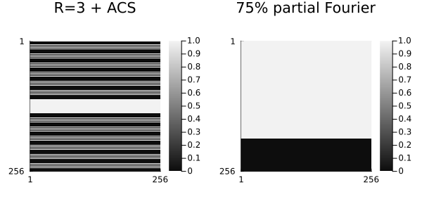
Over two subsampled dimensions (a 3D acquisition) the lattice acceleration is factored into a stride per dimension, as close to equal as its divisors allow: 4 becomes 2×2, 3 becomes 3×1.
Non-Cartesian Trajectories
Ready-made generators for the common non-Cartesian sampling patterns, returned as NamedDimsArrays in exactly the layout AcquisitionInfo/simulate_acquisition expect (coordinate axis first, normalized to [-0.5, 0.5), NFFT.jl convention):
Ristretto.radial_trajectory — Function
radial_trajectory(nsamples::Int, nspokes::Int;
ordering::RadialOrdering = GoldenAngle(), extent::Real = 0.5, center_out::Bool = false)
-> NamedDimsArray{(:coord, :sample, :spoke)}Generate a 2D radial (projection-reconstruction) k-space trajectory: nspokes straight lines through the k-space center, each sampled at nsamples points spanning (-extent, extent) (normalized units, NFFT.jl convention).
ordering controls the spoke-to-spoke angle increment (spokes are lines, so angles are taken modulo π): LinearOrdering, GoldenAngle (the default) or TinyGoldenAngle, which carries its own family index.
center_out = true acquires half spokes instead (center-out radial, as in UTE): each spoke runs from the k-space center to extent, its first sample on k = 0. A half spoke is a ray, so angles are taken modulo 2π and every increment above doubles — 2π/φ for the golden angle, `2π/(φ + N
- 1)
for the tiny golden angles,2π/nspokes` for linear ordering.
Returned as a NamedDimsArray with dimension names (:coord, :sample, :spoke).
Ristretto.stack_of_stars_trajectory — Function
stack_of_stars_trajectory(nsamples::Int, nspokes::Int, npartitions::Int; kwargs...)
-> NamedDimsArray{(:coord, :sample, :spoke, :partition)}3D "stack-of-stars" trajectory: the 2D radial in-plane pattern from radial_trajectory (nsamples, nspokes and kwargs are forwarded to it) is repeated identically at every one of npartitions Cartesian partition-encoding (kz) positions — radial sampling in-plane, conventional Cartesian phase encoding along the partition direction.
Returned as a NamedDimsArray with dimension names (:coord, :sample, :spoke, :partition).
Ristretto.kooshball_trajectory — Function
kooshball_trajectory(nsamples::Int, nspokes::Int; extent::Real = 0.5, center_out::Bool = false)
-> NamedDimsArray{(:coord, :sample, :spoke)}Full 3D radial ("kooshball") trajectory: nspokes spokes through the k-space center, each sampled at nsamples points spanning (-extent, extent), with spoke directions distributed quasi-uniformly over the sphere using the multidimensional golden-means ordering of Chan et al., "Temporal stability of adaptive 3D radial MRI using multidimensional golden means", Magn. Reson. Med. 61(2):354-363, 2009 (golden means Φ₁ ≈ 0.4656, Φ₂ ≈ 0.6823): spoke n has cos θ = 1 - 2 mod(nΦ₂, 1) and azimuth 2π mod(nΦ₁, 1), so any run of consecutive spokes covers the sphere near-uniformly. phyllotaxis_trajectory orders the spokes on a spiral instead.
center_out = true acquires half spokes, each from the k-space center (first sample on k = 0) to one sample short of extent, as in 3D UTE and ZTE-like radial acquisitions.
Returned as a NamedDimsArray with dimension names (:coord, :sample, :spoke).
Ristretto.phyllotaxis_trajectory — Function
phyllotaxis_trajectory(nsamples::Int, nspokes::Int;
interleaves::Int = 1, extent::Real = 0.5, center_out::Bool = false)
-> NamedDimsArray{(:coord, :sample, :spoke)}3D radial trajectory on a spiral phyllotaxis (Piccini et al., "Spiral phyllotaxis: the natural way to construct a 3D radial trajectory in MRI", Magn. Reson. Med. 66(4):1049-1056, 2011): nspokes spokes through the k-space center, each sampled at nsamples points spanning (-extent, extent). Spoke n of N has azimuth n · 2π(1 - 1/φ) (the golden angle, 137.5°) and polar angle (π/2)√(n/N), which fills the upper hemisphere — a full spoke covers the opposite direction as well.
The spokes are dealt into interleaves interleaves, spoke n to interleave mod(n, interleaves), and returned interleave by interleave. With a Fibonacci number of interleaves each one is a smooth spiral from the pole to the equator, which is how the trajectory is acquired: one interleave per heartbeat or per segment. (The self-gating k_z spoke Piccini et al. prepend to every interleave is not added.)
center_out = true acquires half spokes, from the k-space center (first sample on k = 0) to one sample short of extent. Half spokes need the whole sphere, so there the polar angle follows the spherical Fibonacci lattice, cos θ = 1 - (2n + 1)/N, on the same golden-angle azimuths.
Returned as a NamedDimsArray with dimension names (:coord, :sample, :spoke).
Ristretto.spiral_trajectory — Function
spiral_trajectory(nsamples::Int, ninterleaves::Int;
variant::SpiralVariant = Archimedean(), nturns::Real = 8, extent::Real = 0.5)
-> NamedDimsArray{(:coord, :sample, :interleave)}2D spiral k-space trajectory: ninterleaves rotated copies of a single spiral arm, each sampled at nsamples points from the k-space center out to extent (interleave i is the base arm rotated by 2π(i-1)/ninterleaves).
variant selects the radial growth law — Archimedean or VariableDensity, which carries its own exponent. t runs linearly over [0, 1] along the arm, and sample density near radius ρ scales with 1/(dρ/dt) there.
Returned as a NamedDimsArray with dimension names (:coord, :sample, :interleave).
Ristretto.floret_trajectory — Function
floret_trajectory(nsamples::Int, ninterleaves::Int;
nhubs::Int = 3, nturns::Real = 4, max_elevation::Real = nhubs == 1 ? π / 2 : π / 4,
extent::Real = 0.5)
-> NamedDimsArray{(:coord, :sample, :interleave, :hub)}3D FLORET trajectory (Fermat Looped, ORthogonally Encoded Trajectories; Pipe et al., "A new design and rationale for 3D orthogonally oversampled k-space trajectories", Magn. Reson. Med. 66(5): 1303-1311, 2011): center-out arms, each a Fermat spiral (ρ ∝ √ϕ, uniform density within its surface) wound on a cone around a hub axis, with ninterleaves arms per hub and nhubs orthogonal hubs (axes k_z, k_x, k_y, in that order).
Arm j of a hub lies at elevation e_j above the plane normal to the hub axis, with sin e_j spread evenly over (-sin max_elevation, sin max_elevation), and starts at azimuth j · 137.5° (the golden angle). Its radius grows as extent · √t while its azimuth turns 2π · nturns · t, for t sampled evenly on [0, 1). Three hubs with |e| ≤ 45° cover the sphere with the overlap the design calls orthogonal oversampling; a single hub needs max_elevation = π/2, which is the default for nhubs = 1.
This reproduces the geometry of FLORET, not a gradient waveform: samples are evenly spaced in t, not limited by gradient amplitude or slew rate.
Returned as a NamedDimsArray with dimension names (:coord, :sample, :interleave, :hub).
Ristretto.sparkling_trajectory — Function
sparkling_trajectory(nsamples::Int, nshots::Int;
ndims::Int = 2, cutoff::Real = 0.1, decay::Real = 2,
max_step::Real = max(extent/64, 2extent/nsamples), max_curvature::Real = max_step/10,
iterations::Int = 200, grid_size::Int = ndims == 2 ? 128 : 32, extent::Real = 0.5,
threaded::Bool = true)
-> NamedDimsArray{(:coord, :sample, :shot)}SPARKLING trajectory (Spreading Projection Algorithm for Rapid K-space sampLING; Lazarus et al., "SPARKLING: variable-density k-space filling curves for accelerated T2*-weighted MRI", Magn. Reson. Med. 81(6):3643-3661, 2019; 3D in Chaithya et al., IEEE Trans. Comput. Imaging 8:1-15, 2022): nshots center-out shots of nsamples samples each, in ndims (2 or 3) dimensions, whose sample distribution is pulled towards a target density while the samples repel each other.
The target density is the isotropic, radially decaying one of Lazarus et al.: 1 up to radius cutoff · extent, then (cutoff · extent/|k|)^decay, restricted to the cube |k|∞ < extent.
Each iteration takes a gradient step on the SPARKLING energy — attraction to the target minus repulsion between samples, both with the kernel |x - y| — and projects every shot back onto the constraints: it starts on k = 0, moves at most max_step between samples (gradient amplitude), and its step changes by at most max_curvature between samples (slew rate), all in the normalized units of the trajectory. The gradient comes from a particle-mesh evaluation on a grid_size^ndims grid: the two densities are deposited by cloud-in-cell and convolved with the kernel by FFT, and the resulting potential is differentiated through each sample's cloud-in-cell weights, which makes it the exact gradient of the energy on the mesh. An iteration costs O(nshots · nsamples + grid_size^ndims log grid_size). The projection is the Euclidean one of the paper, solved approximately by a fixed number of primal-dual steps; a final tracking pass along each shot makes the result satisfy the constraints exactly.
With threaded = true the projection of the shots and the gradient at the samples are split over Julia's threads, and the mesh FFTs use FFTW's threads once the mesh is large enough for them to pay. Each shot and each sample is computed exactly as in the serial loop, so the result is deterministic and the same for every thread count.
Returned as a NamedDimsArray with dimension names (:coord, :sample, :shot).
radial_trajectory, stack_of_stars_trajectory, kooshball_trajectory and phyllotaxis_trajectory take center_out = true for half spokes (center-out radial, as in UTE), which start on k = 0.
The spoke ordering and the spiral growth law are chosen with a type rather than a symbol, so each carries its own parameters and a typo is a MethodError instead of a runtime ArgumentError:
Ristretto.LinearOrdering — Type
LinearOrdering() <: RadialOrderingSpokes spaced uniformly over [0, π) — sequential (linear) profile order. Every spoke count has to be acquired in full before k-space is covered evenly.
Ristretto.GoldenAngle — Type
GoldenAngle() <: RadialOrderingSuccessive spokes rotated by the golden angle π · (√5 - 1)/2 ≈ 111.246° (Winkelmann et al., "An optimal radial profile order based on the golden ratio for time-resolved MRI", IEEE Trans. Med. Imaging 26(1):68-76, 2007). Any prefix of the sequence covers k-space near-uniformly, so one trajectory can be retrospectively under-sampled to any spoke count without regenerating it.
Ristretto.TinyGoldenAngle — Type
TinyGoldenAngle(index::Int = 2) <: RadialOrderingThe index-th member of the tiny-golden-angle family, π / (φ + index - 1) with φ = (1 + √5)/2 (Wundrak et al., Magn. Reson. Med. 2015 / IEEE Trans. Med. Imaging 2015). Consecutive spokes stay closer together than with the standard golden angle, which is what sliding-window / view-sharing reconstructions want, while the golden ratio's incremental-coverage property is retained.
index = 1 is the standard golden angle, i.e. TinyGoldenAngle(1) and GoldenAngle produce the same spokes; the default 2 is the first genuinely tiny member.
Ristretto.Archimedean — Type
Archimedean() <: SpiralVariantConstant angular velocity, ρ(t) = extent · t — the classic Archimedean spiral, with uniform radial sample density.
Ristretto.VariableDensity — Type
VariableDensity(exponent::Real = 2.0) <: SpiralVariantρ(t) = extent · t^exponent. An exponent above 1 makes dρ/dt → 0 as t → 0, i.e. slower initial radial growth, which oversamples the k-space center relative to the Archimedean spiral (a common compressed-sensing spiral design) at the cost of undersampling the periphery. 1 reduces to Archimedean; below 1 does the reverse — denser periphery, sparser center.
using NamedDims
traj = radial_trajectory(128, 96; ordering = GoldenAngle())
acq_radial = AcquisitionInfo(; trajectory = traj, image_size = (256, 256))
data_radial = simulate_acquisition(img, acq_radial; inverse_crime_check = false)
size(data_radial.kspace_data)(128, 96)Simulate Acquisition
Ristretto.simulate_acquisition — Function
simulate_acquisition(phantom, acq_info::CartesianAcquisitionInfo;
inverse_crime_check = true, keep_sensitivity_maps = nothing)
simulate_acquisition(phantom, acq_info::NonCartesianAcquisitionInfo;
inverse_crime_check = true, keep_sensitivity_maps = nothing)Simulate the k-space an acquisition described by acq_info would measure from phantom.
acq_info.image_size is the grid the data will be reconstructed on; the phantom's spatial size is the grid it is simulated on, and must be at least as large along every spatial axis. Both grids cover the same field of view. When the phantom is finer, its full k-space is computed on its own grid and only the frequencies the reconstruction grid can represent are kept (Cartesian), or the trajectory is sampled at the same physical frequencies on the phantom grid (non-Cartesian), scaled and phase-shifted to the reconstruction grid's voxel size and origin. The non-Cartesian simulation then uses a more accurate NFFT than a reconstruction does, so the data do not share its gridding error.
Simulating with the operator that later reconstructs the data is the inverse crime [Kaipio & Somersalo]: the data are exactly consistent with the model, so reconstructions look better than they would on measured data. With inverse_crime_check = true a phantom of the reconstruction's size gets a warning, and so does an integer multiple of it, which leaves a point-sampled phantom partly consistent with the model; each is checked per spatial axis, so a phantom that is finer in-plane only is still reported for its other axes. Rasterize the phantom area-sampled (GeometricMedicalPhantoms' supersample keyword) on a grid about 1.6 times finer per axis, e.g. 202² for a 128² reconstruction: in a study of the Shepp–Logan phantom its simulation error is then at the noise level of 30 dB SNR data [Guerquin-Kern et al.]. Score reconstructions against the same object rasterized area-sampled at image_size, not against a point-sampled one. Pass inverse_crime_check = false where the consistency is what a test checks.
Arguments
phantom: The object, a standard array or aNamedDimsArray, with its spatial axes first and any batch axes (frames, slices, ...) after them.acq_info: The acquisition: sampling pattern or trajectory, reconstruction grid (image_size) and, optionally, coil sensitivity maps. Maps act on the phantom, so their spatial size must be the phantom's.
Keywords
inverse_crime_check::Bool = true: warn when the phantom grid equals the reconstruction grid, or is an integer multiple of it, along any spatial axis.keep_sensitivity_maps::Union{Bool, Nothing} = nothing:truereturns the sensitivity maps, resampled to the reconstruction grid. Otherwise the returned acquisition carries none, since the maps that simulated the data are themselves a part of the inverse crime; estimate them from the data (estimate_sensitivities) instead. Without maps, a reconstruction of unnamed data treats the coil axis as a batch axis, so the defaultnothinglogs an info message when maps are dropped;falsedrops them silently.
Returns
- A copy of
acq_infowith the simulated k-space inkspace_data.
References
- Kaipio, J., & Somersalo, E. (2007). Statistical inverse problems: discretization, model reduction and inverse crimes. J Comput Appl Math, 198(2), 493-504. https://doi.org/10.1016/j.cam.2005.09.027
- Guerquin-Kern, M., Lejeune, L., Pruessmann, K. P., & Unser, M. (2012). Realistic analytical phantoms for parallel magnetic resonance imaging. IEEE Trans Med Imaging, 31(3), 626-636. https://doi.org/10.1109/TMI.2011.2174158
Avoiding the inverse crime
Simulating data with the operator that later reconstructs them, on the reconstruction's own grid, is the inverse crime [1]: the data fit the model exactly, so a reconstruction looks better than it would on measured data. simulate_acquisition therefore treats acq_info.image_size as the reconstruction grid and the phantom's own size as the grid the data are simulated on. From a finer phantom it keeps only the frequencies the reconstruction grid can represent (Cartesian), or samples the trajectory at the same physical frequencies on the phantom's grid (non-Cartesian). A phantom of the reconstruction's size gets a warning, and so does an integer multiple of it, each checked per spatial axis; inverse_crime_check = false silences both where the consistency is what is being tested.
How fine is fine enough was measured on the modified Shepp–Logan phantom, whose continuous Fourier transform is known in closed form, so data can be simulated without any grid (benchmark/inverse_crime/study.jl). Reconstruction grid 128 × 128; the table gives the relative error of data simulated from rasterized phantoms of s times that size. Point: each voxel takes the value at its centre. Area: the mean of 4 × 4 sub-voxel samples (GeometricMedicalPhantoms' supersample = 4).
ratio s | phantom | Cartesian, point | Cartesian, area | radial, point | radial, area |
|---|---|---|---|---|---|
| 1 (inverse crime) | 128² | 21.2 % | 8.2 % | 3.0 % | 1.1 % |
| 1.3 | 166² | 14.2 % | 5.1 % | 2.0 % | 0.6 % |
| 1.5 | 192² | 11.2 % | 3.5 % | 1.7 % | 0.5 % |
| 1.58 | 202² | 10.8 % | 3.2 % | 1.6 % | 0.4 % |
| 1.7 | 218² | 8.7 % | 2.6 % | 1.2 % | 0.3 % |
| 2 | 256² | 7.7 % | 2.0 % | 1.2 % | 0.3 % |
| 3 | 384² | 4.2 % | 0.9 % | 0.7 % | 0.1 % |
Area sampling matters more than the ratio: it cuts the error three- to fourfold. Larger is always more accurate, at a cost that grows as s^D, so the ratio is a cost/accuracy choice. The recommendation is the smallest area-sampled ratio whose error reaches the noise level of 30 dB data (3.2 %): about 1.6 times the reconstruction size per axis, area-sampled, e.g. a 202² phantom for a 128² reconstruction. Round ratios are best avoided: at s = 2 every voxel centre of the reconstruction grid is also one of the phantom, which makes errors measured against a point-sampled phantom about 7 % optimistic.
The effect on a reconstruction was measured as in [2]: the signal-to-error ratio of a total variation reconstruction from 3-fold undersampled data simulated from the rasterized phantom, minus that from the analytic data, both against the area-sampled 128² phantom. Area-sampled phantoms come out 1.3–1.5 dB optimistic for 1.5 ≤ s ≤ 2 (0.6 dB at 1.3 and at 3), point-sampled ones 3–5 dB pessimistic; the inverse crime itself is 6.8 dB optimistic with an area-sampled phantom. Part of the remaining bias is the box filter that area sampling applies, which brings the data closer to the area-sampled reference than the analytic data are.
Coil sensitivity maps act on the phantom, so they are made at its size. The returned acquisition carries none unless keep_sensitivity_maps = true (it then carries them resampled to the reconstruction grid): reusing the maps that simulated the data is part of the same crime, and with measured data they are estimated (estimate_sensitivities). Dropping them is logged as an info message, since a reconstruction without maps treats the coil axis as a batch axis; keep_sensitivity_maps = false drops them silently.
A reconstruction from such data is scored against the same object rasterized area-sampled on the reconstruction grid. Neither the fine phantom (a different size) nor a point-sampled phantom of the reconstruction's size will do: against the latter every edge counts as error, which is the 3–5 dB pessimism above.
img_fine = create_shepp_logan_phantom(202, 202, :axial; ti = MRISheppLoganIntensities(), eltype = ComplexF32, supersample = 4)
acq_128 = AcquisitionInfo(is3D = false, image_size = (128, 128), sensitivity_maps = coil_sensitivities(202, 202, 8))
data_128 = simulate_acquisition(img_fine, acq_128)
truth_128 = create_shepp_logan_phantom(128, 128, :axial; ti = MRISheppLoganIntensities(), eltype = ComplexF32, supersample = 4)
size(data_128.kspace_data), data_128.sensitivity_maps, size(truth_128)((128, 128, 8), nothing, (128, 128))Advanced Simulation
Adding Noise
add_noise adds complex Gaussian noise to k-space data, either as a target SNR (in dB, relative to the RMS of the data) or as an absolute standard deviation. It accepts a plain array, a NamedDimsArray, or an AcquisitionInfo directly (in which case a copy with noisy kspace_data is returned, via the same copy-constructor pattern as AcquisitionInfo(acq; ...)):
Ristretto.add_noise — Function
add_noise(data; snr_db=nothing, noise_std=nothing, snr=nothing, signal_box=nothing, rng=Random.default_rng())
add_noise(acq_info::AcquisitionInfo; snr_db=nothing, noise_std=nothing, rng=Random.default_rng())Add complex white Gaussian noise to simulated data — k-space samples, or an image.
Exactly one of snr_db, noise_std or snr must be given (passing more than one, or none, is an ArgumentError):
snr_db: target signal-to-noise ratio in dB, defined relative to the RMS of the data,σ = rms(data) * 10^(-snr_db / 20). This is the convention already used by theadd_noisehelper inbenchmark/comparison/scripts/_toolkits.jland matches how SNR is reported for the pseudo-replica method (Robson et al., MRM 60:895-907, 2008; seepseudo_replica).noise_std: the absolute standard deviationσof the complex noise, split evenly between the real and imaginary parts (each~ 𝒩(0, (σ/√2)²), so thatstd(noise) == σ). This matches thenoise_stdkeyword already used bypseudo_replicaand BART'snoise -n <stdev>command (a fixed absolute standard deviation rather than a relative SNR).snr: target signal-to-noise ratio in the clinical, image-domain sense, as a bare ratio rather than in decibels — the mean signal in a box at the centre of the image, of sizesignal_boxin voxels, divided by the noise level (seeestimate_snr, which measures the same quantity back from that box and the corners). It is meant for an image:add_noise(phantom; snr = 20)gives an image whoseestimate_snris ≈ 20. Passing it for k-space data is meaningless, since the "background" of a k-space array is not noise, and it is rejected for anAcquisitionInfo.
data may be a plain AbstractArray or a NamedDimsArray (dimension names are preserved). Passing an AcquisitionInfo (CartesianAcquisitionInfo or NonCartesianAcquisitionInfo) adds noise to acq_info.kspace_data and returns a copy of acq_info with the noisy k-space (via the existing copy-constructor pattern; acq_info itself is left untouched). acq_info.kspace_data must not be nothing.
rng fixes the noise realization for reproducibility, following the rng keyword already used throughout the package (e.g. pseudo_replica, LocallyLowRank).
Examples
noisy_kspace = add_noise(kspace_data; snr_db = 20)
noisy_acq = add_noise(acq; noise_std = 0.01)
noisy_image = add_noise(phantom; snr = 20)Noise can also be added to an image rather than to k-space, targeting the clinical SNR — a bare ratio measured the way a scanner acceptance test measures it, rather than a decibel figure relative to the data RMS. estimate_snr measures that same quantity back from an image:
Ristretto.estimate_snr — Function
estimate_snr(image; signal_box = nothing, noise_box = nothing, corners = :all) -> RealSignal-to-noise ratio of a magnitude image, measured the way a clinical acceptance test measures it (NEMA MS 1; Dietrich et al., Measurement of SNR in MR images, J. Magn. Reson. Imaging 26:375-385, 2007, their method 1): the mean signal in a box at the centre of the image, divided by the standard deviation of the background in boxes placed in its corners, times the Rayleigh correction factor sqrt(2 - π/2) ≈ 0.6551:
\[\mathrm{SNR} = 0.6551 \; \frac{\overline{S}_{\text{centre box}}}{\sigma_{\text{corner boxes}}}\]
The correction is what makes the result an SNR rather than a ratio of two differently-distributed statistics: a corner box contains no signal, so the magnitude of complex Gaussian noise there is Rayleigh-distributed and its standard deviation is 0.6551 σ, not the σ the ratio wants.
Both regions are boxes of a size the caller gives in voxels. Nothing is segmented and no threshold is applied: where the two regions sit is a property of the measurement, not of the image it is measured in. That is what makes the number comparable between images — a threshold moves with the noise it is supposed to be measuring, and reads high by tens of percent once the noise stops being small — and it is also what makes it the caller's responsibility to check that the boxes land where they should. snr_masks returns the two regions so they can be displayed.
Keyword arguments
signal_box— the size of the centred signal box, in voxels: anIntegerfor the same side in every dimension, or aTupleofIntegers for one side per dimension.nothing(the default) uses an eighth of each image dimension. Make it small enough to stay inside uniform tissue: the mean over a box straddling an edge is not a signal level.noise_box— the size of each corner box, in voxels, in the same two forms.nothing(the default) uses an eighth of each image dimension. Boxes are taken in every dimension, so a 3D volume is read in its eight corners rather than in the four corners of one slice.corners— which corners to use.:all(the default) pools every corner; anIntegeror a collection ofIntegers selects corners by index, counted1:2^ndims(image)with the first dimension varying fastest (in 2D: 1 = low-low, 2 = high-low, 3 = low-high, 4 = high-high). Use it when part of the field of view is not signal-free — a wrapped shoulder, a coil close to the edge, a flow artefact — since a corner that contains anything but noise makes the estimate read low.
The background must be noise. On data from a parallel-imaging reconstruction, or with any filtering that has touched the air around the object, the corner standard deviation is no longer the noise level and the number is not an SNR; the multiple-acquisition estimator pseudo_replica is the one to reach for there.
Measured against add_noise(; snr) on a uniform box, the estimate is unbiased to well under a percent from SNR 5 upwards, and reads about 10% high at SNR 2, where the Rician bias on the signal mean stops being negligible.
A noiseless image has a corner standard deviation of zero, and the ratio is then Inf.
Examples
noisy = add_noise(phantom; snr = 20)
estimate_snr(noisy) # ≈ 20
estimate_snr(noisy; signal_box = 24, noise_box = 16)
estimate_snr(noisy; noise_box = (16, 16), corners = (1, 2)) # only the two corners at low ynoisy_image = add_noise(img; snr = 20)
estimate_snr(noisy_image)20.62428437438849Both regions are boxes whose size the caller gives in voxels — a centred one for the signal, one in each corner for the noise — so nothing about where they sit depends on the image being measured. They can be displayed rather than trusted:
Ristretto.snr_masks — Function
snr_masks(image; signal_box = nothing, noise_box = nothing, corners = :all) -> (signal, noise)The two boolean masks estimate_snr measures over, returned so that the regions a reported SNR was taken from can be displayed rather than described. signal is the centred signal box; noise is the union of the selected corner boxes. The keyword arguments are estimate_snr's, and mean the same thing.
# Target SNR in dB
noisy_acq = add_noise(acq_with_data; snr_db = 20)
# Or an absolute noise standard deviation
noisy_acq2 = add_noise(acq_with_data; noise_std = 0.02)
# Reconstruct noisy data
img_recon = reconstruct(noisy_acq, IterativeReconstruction(L1Wavelet2D(5e-3)); verbosity = Silent())Subsampling: Indexing Expressions vs. Boolean Masks
subsampling accepts two forms (see AcquisitionInfo for the full set, including plain boolean masks):
A tuple of indexing expressions (
Colon, ranges, or integer vectors) — the default idiom for anything with regular structure. It reads directly as "keep these indices along each dimension", is cheaper to construct and store than a full mask, and composes naturally withBase's indexing:ny = 256 # Partial Fourier: keep the first 65% of phase-encoding lines pf_pattern = (:, 1:round(Int, 0.65 * ny)) # Uniform GRAPPA-style undersampling (every 4th line) with a fully sampled ACS block — # a range/step expression reads directly as the acceleration factor and ACS width, where a # mask only shows the result of them. R, acs_half_width = 4, 12 center = div(ny, 2) grappa_lines = sort(union(1:R:ny, (center - acs_half_width):(center + acs_half_width))) grappa_pattern = (:, grappa_lines)(Colon(), [1, 5, 9, 13, 17, 21, 25, 29, 33, 37 … 217, 221, 225, 229, 233, 237, 241, 245, 249, 253])A boolean mask (or
(:, mask)for a fully sampled frequency-encoding dimension) — the special case for genuinely irregular or random patterns, where there is no indexing expression to write down.create_sampling_pattern(above) returns this form.
Both forms are passed the same way:
acq_pf = AcquisitionInfo(nothing; is3D=false, image_size=(ny, ny), subsampling=pf_pattern)
acq_grappa = AcquisitionInfo(nothing; is3D=false, image_size=(ny, ny), subsampling=grappa_pattern)References
- Kaipio, J., Somersalo, E., "Statistical inverse problems: discretization, model reduction and inverse crimes", Journal of Computational and Applied Mathematics 198(2):493–504 (2007). https://doi.org/10.1016/j.cam.2005.09.027
- Guerquin-Kern, M., Lejeune, L., Pruessmann, K. P., Unser, M., "Realistic analytical phantoms for parallel magnetic resonance imaging", IEEE Transactions on Medical Imaging 31(3):626–636 (2012). https://doi.org/10.1109/TMI.2011.2174158